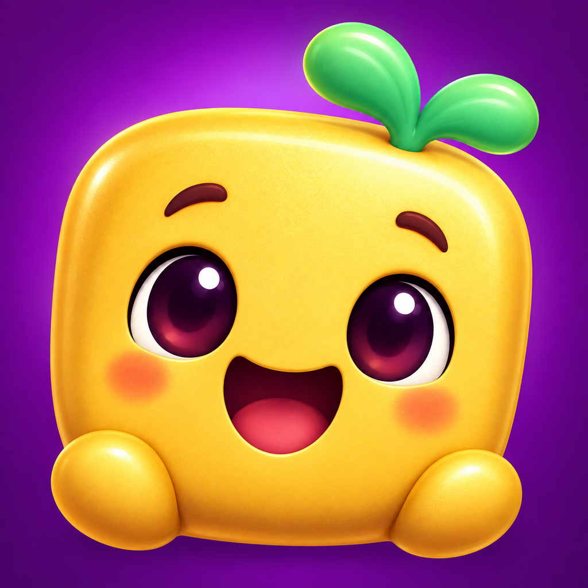

Word Games: WordCascade
Swap neighboring letters. Make English words across or down. Their tiles clear, new letters fall, and another word can start a cascade.
WordCascade is in development. These pages provide support and policy details for testing; they do not announce App Store availability.
How to play
Tap two neighboring tiles, or swipe one toward its neighbor. A valid swap makes a word of 3–6 letters from the game's curated English vocabulary. Words read left to right or top to bottom. Invalid swaps return without spending a move.
Reach a level's score target before its moves run out. Daily puzzles and basic practice offer a free path. Interface language can be changed using the globe or Settings; word puzzles remain in English.
Saved progress
Your game, assistance choice and level history are stored on your device. Settings lets you delete completed-level records or reset progress. Removing the app also removes its locally stored data.
Purchases and support
If Plus plans are offered, Apple presents the current price and handles purchases. When plans are unavailable, you can continue playing free. Restore Purchases is available on the Plus screen and in Settings. Manage subscriptions in your Apple account settings.
For help, contact imosnoi@smartaitomation.com. Include the app version and a description of the problem. Do not include passwords or payment information.